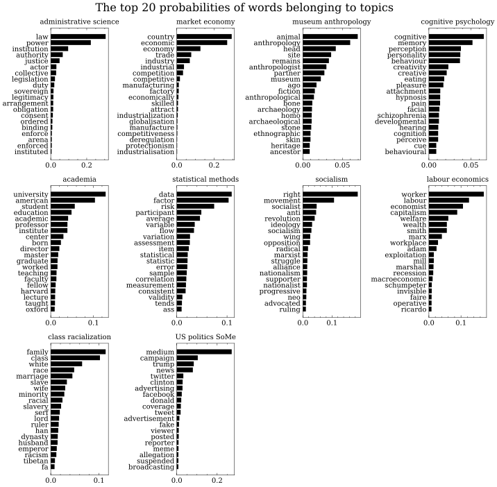

Main Results¶
Wit the data at hand and all of the preprocessing put behind we now put together our great Wikipedia network that describes how the pages references to other pages at the site. So buckle up and get ready for a crazy ride through the winding roads of academia on Wikipedia.
from IPython.core.display import display, HTML
display(HTML('full_network.html'))
So what does this network tell us about the disciplines? Well it seems that religion is not only the opium of the of the people but also for the social sciences as this it the most linked page across all disciplines. The network seemingly confirms one of many academic-stereotypes: Researches rarely care about anything outside their own field. The outlier here seems to be Sociology that makes a sympathic and honorable attempt at working as a middle-man linking knowledge from Psychology, Anthropology and Political Science. But even for sociologists the field of Economics are rather distinct except for the case of notable scholars as Bertrand Russel, John Rawls and Daniel Kahneman whose categorisation as economists are rather dubious to say the least. Likewise, our use of the advanced statistical technique node2vec confirms this, and goes even further by providing evidence suggesting that the classical opponents in Social Science, Economics and Anthropology, are as expected the least connected disciplines.
To take our analysis a bit deeper we use a community-detection algorithm that locates which pages tend to bundle together and form groups - so-called communites - in our network. The image below shows the 9 biggest communites found by our algorithm and the corresponding word best describing each community.
%%capture
# Yep we need all the code here ...
import time
import pickle
import pandas as pd
import community
import networkx as nx
from fa2 import ForceAtlas2
import numpy as np
from typing import List
from tqdm.notebook import tqdm
from collections import Counter, namedtuple, defaultdict
from sklearn.linear_model import LogisticRegression
import warnings
warnings.filterwarnings('ignore') # Hide DeprecationWarning
import matplotlib.pyplot as plt
from IPython.display import set_matplotlib_formats
from matplotlib import rc
plt.style.use('science')
set_matplotlib_formats('svg')
rc("text", usetex=False)
from pyvis.network import Network
from bokeh.io import output_notebook, show, save, output_file
from bokeh.models import Range1d, Circle, ColumnDataSource, MultiLine
from bokeh.plotting import from_networkx
from bokeh import palettes
from bokeh.layouts import row
from bokeh.plotting import figure
from bokeh.models import Title
output_notebook()
# We load in our final edgelist and model an undirected network
edgelist = pd.read_pickle('https://drive.google.com/uc?export=download&id=1e3sy-VzJQXP1CozdBviCD5PYgrcWC_dw')
node_attr = pd.read_pickle("https://drive.google.com/uc?export=download&id=1HvB-OQt4P-MXEM7X-fT47_aso9-KL_pK")
G = nx.Graph()
G.add_edges_from(edgelist)
nx.set_node_attributes(G, node_attr)
# We extract the gcc
gcc = max(nx.connected_components(G), key=len)
G = G.subgraph(gcc)
#Get Louvain partitions and the distribution of communites
partition = community.best_partition(G, random_state = 1) # Set seed for reproducibility
community_distribution = Counter(partition.values())
df = pd.read_pickle('Final_df.pickle')
def get_bigrams(unigram: list) -> list:
"""
Takes list of unigrams and converts them to bigrams
"""
return["_".join([unigram[i], unigram[i+1]]) for i,t in enumerate(unigram) if i != len(unigram)-1]
df["unigrams"] = df["tokens"]
df["bigrams"] = df["unigrams"].apply(lambda x: get_bigrams(x))
def create_dfm(docs:List[List], min_df:int=1,
max_df:int=np.inf, idf:bool=True,
return_vocab=False)->np.array:
"""
Creates document-feature matrix of size N (docs) x K (vocab size).
args:
docs(list[list]): a list of documents where a document is a list of tokens.
max_df(int): maximum freq allowed for a token in a document
min_df(int): minimum freq required for a token in a document
idf(bool): calculate the iverse document frequency (idf) else raw count
returns:
dfm(np.array): the NxK dfm
vocab(list): vocab of unique tokens
"""
#Remove very common or uncommon words
if min_df != 0 or max_df != np.inf:
temp = []
for doc in docs:
word_freq = Counter(doc)
temp.append([w for w in doc if word_freq[w] >= min_df and
word_freq[w] <= max_df])
docs = temp
#Build the vocabulary and create index for each token
vocab = list(set([w for doc in docs for w in doc]))
vocab_size = len(vocab)
tok2idx = {w:i for i,w in enumerate(vocab)}
doc_n = len(docs)
#Instantiate the dfm and add counts
dfm = np.zeros([doc_n, vocab_size])
for i,toks in enumerate(docs):
for tok in toks:
tok_idx = tok2idx[tok]
dfm[i, tok_idx] += 1
#Calculate tf-idf
if idf:
dfm = dfm / dfm.sum(axis = 1)[:, None]
idf = np.sign(dfm)
for i in range(doc_n):
idf[i] = np.log((doc_n / idf.sum(axis = 0)))
dfm *= idf
if return_vocab:
return dfm, vocab
else:
return dfm
#Add the corresponding community to each page in the DataFrame
communites = []
obs = namedtuple('Obs', 'name Louvain_Community')
for n in df['title']:
try:
com = 'community_'+str(partition[n])
except:
com = np.nan
communites.append(obs(n, com))
df = pd.merge(df, pd.DataFrame(communites), left_on='title', right_on = 'name')
#Get top9 communities
top9 = ['community_'+str(c[0]) for c in community_distribution.most_common(9)]
#Subset data on top 9 communities and groupby community. Extract the unigrams and bigrams.
top9_df = df.loc[df['Louvain_Community']\
.isin(top9)].groupby('Louvain_Community')\
.agg({'unigrams':'sum',
'bigrams':'sum'})
# Token list with both unigrams and bigrams
tokens = top9_df.reset_index()["unigrams"] + top9_df.reset_index()["bigrams"]
#Create the document term frequency matrices for unigrams and bigrams. Token must appear min. 5 times
tf_idf, vocab = create_dfm(tokens, idf=True, return_vocab=True, min_df=5)
#Put into dataframes with vocab as colnames and community as index
tfidf_df = pd.DataFrame(tf_idf, columns=vocab, index = top9_df.index)
# Document feature matrix with simple counts
token_count, vocab = create_dfm(tokens, idf=False, return_vocab=True, min_df=5)
token_count_pd = pd.DataFrame(token_count, columns=vocab, index = top9_df.index)
def multinomial_logit_margins(x:np.array=token_count_pd.values,
y:np.array=token_count_pd.index.values,
vocab:list=vocab, p:int=2) -> pd.DataFrame:
"""
Fits a multinomial logistic regression with LASSO penalty of size p.
Then finds the average marginal effect for each feature for each y and append
it to a DataFrame. The model fits based on a x and y both being numpy arrays.
"""
fitted_model = LogisticRegression(multi_class='multinomial',
penalty='l1',
solver = "saga",
C= p,
max_iter=10000).fit(x,y)
betas = fitted_model.coef_
probas = fitted_model.predict_proba(x)
classes = fitted_model.classes_
if len(classes) > 2:
diff = betas[:,None] - np.dot(probas, betas)
avg_margins = np.sum(probas * diff.T, axis=1) / probas.shape[0]
avg_margins = pd.DataFrame(avg_margins, columns=classes)
avg_margins["token"] = vocab
return avg_margins
def plot_most_predictive_features(margins_df:pd.DataFrame, K:int=20):
"""
Based on a DataFrame with the average marginal effect for a list of
features this function plots the K highest features for the different
classes.
"""
fig, axs = plt.subplots(nrows = 3, ncols=3, figsize = (10,10), dpi = 300)
fig.suptitle("Top 20 most predictive features for various communities", fontsize=16)
axs = axs.flat
community_features = {}
most_predictive_features = {}
for j, c in enumerate(margins_df.drop('token', axis=1).columns):
community_features[c] = {margins_df["token"][i]: margins_df[c][i] for i in np.argpartition(margins_df[c],-K)[-K:]}
community_features[c] = sorted(community_features[c].items(), key=lambda x: x[1], reverse=True)
x = [i[0].replace('_', ' ') for i in community_features[c]]
y = [i[1] for i in community_features[c]]
axs[j].plot(x, y,'ko')
axs[j].set_title(f"{c.replace('_', ' ')}", size = 10)
axs[j].tick_params(axis='x', rotation=90)
axs[j].tick_params(axis='x', which='minor', bottom=False, top=False)
most_predictive_features[c] = x
plt.tight_layout()
return most_predictive_features # We return all the features as we want to use them later..
# Prettyfying and uniforming names in the df and graph
# We fit the multinomial_logit_margins() on our raw counts and plot our results
margins_pd = multinomial_logit_margins()
most_predictive_features = plot_most_predictive_features(margins_pd)
def change_node_names(node):
"""
Replaces "_" to " " in node names.
"""
return " ".join(node.split("_"))
G = nx.relabel_nodes(G, change_node_names)
df["title"] = df["title"].apply(lambda x: " ".join(x.split("_")))
# Setting colours
def get_colors_palette_from_parent(G: nx.Graph) -> dict:
"""
Creates a color palette given the parent attribute of the
nodes in a network.
"""
disciplines = set([G.nodes[node]["parent"] for node in G.nodes()])
col_pal = palettes.viridis(len(disciplines))
col_pal = {parent: col_pal[key] for key, parent in enumerate(disciplines)}
return col_pal
col_pal = get_colors_palette_from_parent(G)
def get_color_list_from_palette(G: nx.Graph, col_pal: dict=col_pal) -> list:
"""
Creates a list of colors given the parent attribute of a node
and its color defined in the color palette.
"""
return [col_pal[G.nodes[i]["parent"]] for i in G.nodes]
# Creates dictionary of subgraphs for each community
community_graphs = {}
for c in top9_df.index.tolist():
community_nodes = [x for x, y in G.nodes(data=True)
if x in df[df["Louvain_Community"] == c]["title"].tolist()]
community_graphs[c] = G.subgraph(community_nodes)
# Specifies positioning algorithm
forceatlas2 = ForceAtlas2(gravity=1)
# Create and store a graph plot for each community
graphs = {}
for i, k in enumerate(community_graphs.keys()):
G = community_graphs[k]
title = f'Community: {k.split("_")[1]}'
HOVER_TOOLTIPS = [("Page", "@index"),
("Discipline", "@parent")]
#Create a plot
graphs[k] = figure(tooltips = HOVER_TOOLTIPS,
width=333, plot_height=333,
tools="pan,wheel_zoom,save,reset", active_scroll='wheel_zoom',
x_range=Range1d(-250, 250),
y_range=Range1d(-250, 250))
# Add title and subtitle
graphs[k].add_layout(Title(text= f'{most_predictive_features[k][0:5]}', text_font_style="italic"), 'above')
graphs[k].add_layout(Title(text=f'Community: {k.split("_")[1]}', text_font_size="16pt"), 'above')
# Hide grid and axs
graphs[k].axis.visible = False
graphs[k].grid.grid_line_color = None
#Set positions, node size and color
positions = forceatlas2.forceatlas2_networkx_layout(G, pos=None, iterations=2000)
G_interactive = from_networkx(G, positions, scale=1, center=(0, 0))
G_interactive.node_renderer.data_source.data['node_sizes'] = [G.degree(node) * 0.25 for node in tqdm(G.nodes())]
G_interactive.node_renderer.data_source.data['node_colour'] = get_color_list_from_palette(G)
G_interactive.node_renderer.data_source.data['alpha'] = [0.75 for node in G.nodes()]
G_interactive.node_renderer.glyph = Circle(
size="node_sizes",
fill_color="node_colour",
fill_alpha = "alpha")
#Set edge opacity and width
G_interactive.edge_renderer.glyph = MultiLine(line_alpha=0.8, line_width=0.1)
graphs[k].renderers.append(G_interactive)
show(row(graphs["community_1"], graphs["community_10"], graphs["community_14"]))
show(row(graphs["community_15"], graphs["community_3"], graphs["community_4"]))
show(row(graphs["community_5"], graphs["community_6"], graphs["community_9"]))
Pew that was a long scroll.. Now let’s take a look at the network. Generally speaking the pattern from our previous network is confirmed: The editors of disciplines’ pages on Wikipedia do really not like to link to pages from other disciplines! But it also reveals that the disciplines pages might not be as uniform as first anticipated. Community 1, 10 and 15 are rather unambigous communities of the Political Science category but they serve as a great example of the discipline’s heterogenity. On the one hand Community 15 illustrates the modern study of politics at the universities using scientific methods, whereas community 1 and 10 are two pages of a another subcategory we could label “ideology”. And even though they both revolve around political ideologies, they are widely different as one describes far-left/socialist tendencies whereas the other deals with far-right/libertarian pages. Our detection of communites therefore adds nuances to the painting of the social science landscape: Yes, they do not like to interact, but even within their own disciplinary most like to stay together in their small community of like-minded pages.
Okay.. So the discipline are different, but there must be some similiarites, right?¶
Paradoxically, a rather famous and widely applied theory in social science Social identity theory can help us understand why all of the disciplines seem to think within the box. Originally put forward by Henri Tajfel and his apprentice John Turner the theory explains how members of a group favorize persons similar to themselves, say sociologists, at the expense of the out-group members, say economists. Interestingly, the theory propose that one way to build bridge between people of different groups is by exposure to one another to discover their many similarities. A lesson we believe the editors of Wikipedia could learn a bit from.
Instead of only looking at how the Wikipeda pages were connected we decided to also look at their actual content. For this we ran a topic-model, a model similar to our community detection, but instead of relying on the networks structure it tries to partition the pages into different topics based on the pages’ text.

The funny thing about these topics is, that although some clearly relates to only one disciplines, most of them are constituted by words of pages from more than one discipline. The most clear example of this is the topic we have decided to label statistical methods. When we qualitatively asses the pages of this topic we find a remarkable diversity in the discipline represented hSBM Topic Modelling. As this topic relates to the (statistical) methods used to genereate new knowledge it might suggest, that although the theory of the discplines might vary a bit, the ways they explore the world are fairly similar. What we are trying to say with this is that despite the disciplines cluster together on Wikipedia and stick to intra-disciplinary referencing, they are actually not that different from eatch other. Maybe we could all learn from Tajfel and Turn and enrichen our perspectives by seeing things from other angels.
Here we present the most interesting findings from our project. For a more detailed coverage please visit the explainer notebook.
2. Understanding Communities and what they talk about¶
For each Wiki page, we also collected the body of text. In order to better understand what the communities represent, we used a multionomial logistic model to predict the community using the text as input features. By looking at the words with the highest partial effects on the prediction of some community we can get an idea of what separates them.
4. socialscience2vec: Node and Document Embedding¶
As a last step in our analysis we used
doc2vecandnode2vecto create a meaningful 100-dimensional vector representations of our data. Thedoc2vecmodel is fit on the text corpus while thenode2vecmodel uses the hyperlink network, in both cases the each point represents one Wiki page. In this sense, they represent the same object but different kinds of relations between them. The document embeddings can be understood as the semantic similarity between the pages. and the node embeddings the To visualize the embeddings, we project it on a lower dimensional space using tensorboard and can be accessed through the following links:Node embeddings
Document embeddings
We recommend coloring the points in the projection according to their discipline. This can be done by setting the colormap in the upper-left corner.
Besides clicking on a point to see which page it belongs to, one can also search for the name of a page and find its neighbouring points. This is done in the upper-right corner as in the example bellow.